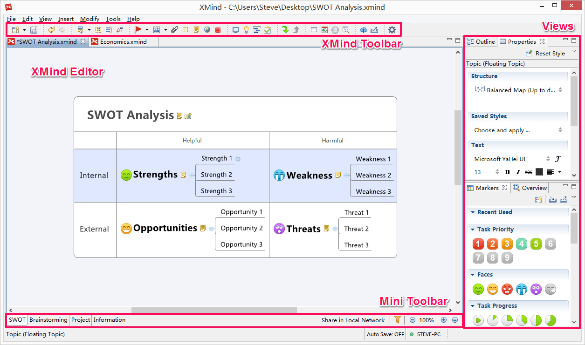

用語集
この用語集は、あなたの情報のために提供されます。それが下記に記載された、技術、プライバシー、セキュリティの用語は、完全または正式な記述として信頼できるものではありません。

インターフェイス- XMind ツールバー:これはそれぞれのコマンドを表すアイコンのグループです。
- XMind エディター:これはユーザーが自分のマップを作成することができるスペースです。
- ミニ ツールバー:ミニ ツールバーは、エディターの下にあります。ここで、シートの切り替え、クイックフィルター、マップのズーム に簡単にできます。
- 表示:表示は、XMind で重要な役割を果たしています。異なる11 種類の表示があります。表示は、マップの書式設定の使用を簡素化し、効率の向上に使用されます。各表示にはツールバーがあり、ドラッグで、XMind の外側や、デスクトップ上を含めた、様々な場所に配置することが簡単にできます。
3 種類の価格設定モデル
- XMind Plus:XMind Plus は、オープンソースのXMind をベースにした、買い取り型の商用ソフトウェア製品です。共有と先進的ないくつかのツールが追加されています。
- XMind Pro:XMind Pro は、より高度なビジネス機能が追加された、買い取り型の商用ソフトウェア製品です。
- XMind Pro サブスクリプション:XMind Pro サブスクリプションは、XMind Pro と同じ機能を備えた商用ソフトウェア製品を、サブスクリプション形式提供するものです。
その他
- ブックおよびシート:すべての XMind ファイルはブック形式で、複数のシートを持つことができます。各シートのそれぞれがマップです。
- トピック:このトピックは、マップの中心的な要素です。
- Xmind ID:XMind ID は xmind.net で自分のアカウントへのサインインに使用する ID です。
- XMind オープン ソース:XMind オープン ソースは、オープン ソースのプロジェクトです。すべての基本的なマインド マップ機能を提供しています。
- XMind Share:XMind Share はユーザーがマインドマップをオンラインで共有することができる、ウェブサービスです。それは無料で利用でできます。